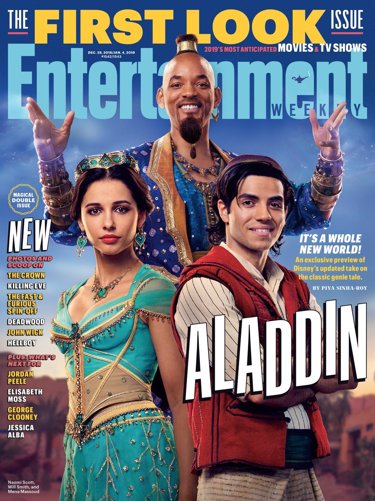

The first look images from Disney's live-action Aladdin remake feature Will Smith as The Genie, Mena Massoud as Aladdin, and Naomi Scott as Princess Jasmine. Directed by Guy Ritchie (Lock, Stock and Two Smoking Barrels, Sherlock Holmes), Aladdin is a re-imagining of Disney's hit animated 1992 musical and the Arabic folktale from One Thousand and One Nights that inspired it. The film is also the latest in a growing collection of live-action/CGI remakes of the Mouse House's classic animated filmography, joining titles like Cinderella, The Jungle Book, and Beauty and the Beast. Disney released a teaser trailer for the live-action Aladdin back in October, in the process teasing the iconic Cave of Wonders from the 1992 animated film. However, while the trailer showed Massoud's Aladdin approaching the famous magical lamp that resides within the massive cave, it didn't actually feature an appearance by Smith as The Genie (a role notably voiced by the late Robin Williams in the animated feature). Well, wonder no longer: the first photos of Smith in the film have arrived.
EW has published a handful of new images from the live-action Aladdin, along with a magazine cover that features Smith, Massoud, and Scott all together. Smith is seen here in his regular human form only, leaving it to a future trailer and/or photos to reveal his massive blue CGI design in the film. According to EW, the effects aren't finished on Smith's blue floating form as The Genie, which is why it's being held back for now. However, Ritchie did tease that Smith's Genie looks like "a muscular 1970s dad" in his full glory. He went on to note that Smith's iteration of the character is a bit more egotistical than Williams' take and "cares about how he’s presented because he’s been doing this for a very long time”. Smith, for his part, says he aimed to deliver a cross between an homage to Williams' Genie and the wise-cracking heroes he was known for playing back in the 1990s (see: Bad Boys, Independence Day, and so on). He also confirmed there's some Fresh Prince of Bel-Air in there, adding “I think it’ll stand out as unique even in the Disney world. There hasn’t been a lot of that hip-hop flavor in Disney history.”
Naturally, Smith's appearance as The Genie will take some getting used to for those who grew up watching the animated Aladdin. Since Williams' Genie was totally blue in his giant and human-sized physical forms alike, Smith's iteration is already a noticeable departure in that respect. It makes sense, though; what works in 2D animation doesn't always translate smoothly into live-action, and having Smith walk around as a blue, yet otherwise regular human for much of the film might've looked strange more than anything else. Similarly, it arguably makes sense for Smith to channel his classic screen persona as The Genie, much like Williams drew from his own comedic style in the animated Aladdin.That being said: here's hoping Smith's giant blue form in Aladdin goes over better than the physical design for a certain other blue character who's making the jump to live-action in 2019.